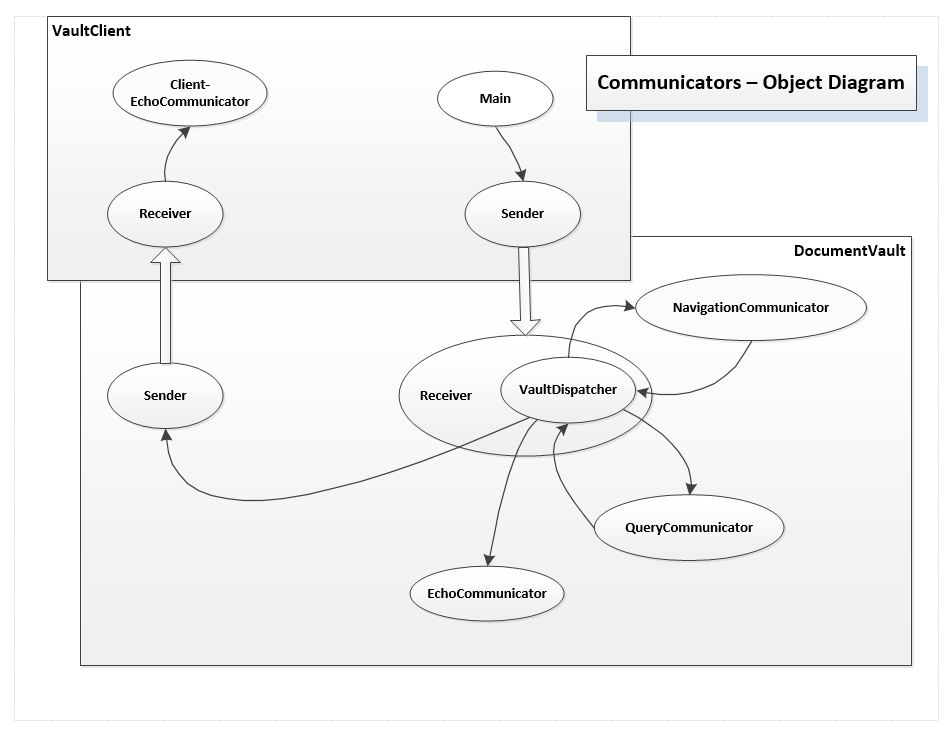

about
Blog: SW Design
11/22/2024
Blog: SW Design
concept, structure, flow of execution
About
click to toggle Site Explorer
Initial Thoughts:
Design of software encompasses many things:-
Concept:
Ideas about the project's functionality, who the users are, what they need, and any critical issues about how those needs will be served, e.g., usability, complexity, safety, security, and robustness.Design usually begins with concept development - establishing user needs, critical issues, and top level package structure. Making a list of Tasks the software must complete to satisfy user needs is often a good way to start. Each task is a candidate to become a top-level package. We want our packages to be focused on a single activity so they are cohesive. We want them to be independently testable and composable with top-level packages for the other tasks. The project concept is its most abstract description and should be invariant over the lifetime of the development. Specifications may change because neither customers nor developers have perfect foresight. But they both need an invariant top-level view of the project even though many concrete details may be changing; the concept document plays this role.More
Let's explore a project concept by looking at the projects for CSE687 - Object Oriented Design, Fall 2018. - In Project #1 we built a single-user test harness that executes a sequence of tests, each of which implements an ITest interface, in the context of a try-catch block and reports results, using an executor class, so that we don't need to write multiple try-catch blocks and don't need to write multiple IO statements. You will find a diagram in the Project #1 statement, linked above, that shows how all the projects will fit together to result in a useful testing facility for a professional project.
- Project #2 packages the single-user test harness into a stand-alone executable that will become part of a multi-user test harness.
- Project #3 builds a process pool that uses asynchronous message-passing communication to support control and message passing between a test harness and it's child tester processes, so that tests can run concurrently without danger of rouge test code taking down the whole test harness.
- Finally, Project #4 adds a Graphical User Interface, based on C# Windows Presentation Foundation (WPF) that builds a Remote Test Harness, by interoperating with our C++ communication channel through a C++\CLI translater, that converts messages and calls from managed C# to native C++ and back.
-
Abstractions:
Abstractions are conceptual models for the entities that are part of a software design. Entities are concrete things from the problem domain like products and orders, customers, employees, and also for the solution domain, like Parsers, Tasks, ThreadPools, etc., where we may need to build complex data structures that define and manage program state.more
Developing problem domain abstractions usually comes early in the design process, and that development may be obvious for domain experts. Having a set of abstractions helps us define the parts that make up a system and the actions the parts take during the system's lifetime. Frequently abstractions turn into classes of the same name. We use the class relationships: inheritance, composition, aggregation, and using to model behaviors of the problem domain entities and actors. These are captured with the Universal Modeling Language (UML) - class, activity, and sequence diagrams. The process of defining abstractions and building their concrete representations continues in the solution domain. For the solution parts aliases can be a useful tool for thinking about and building that part's abstraction.The C++11 using construct represents an alias for some type. Here's an example declaring a symbol table abstraction with aliases: template<typename typeinfo> class SymbolTable { public: using Type = std::string; using Name = std::string; using Record = std::tuple<type, name, typeinfo> using Records = std::vector<record> void add(const Record& record) { _records.push_back(record); } Record& operator[](size_t i); Record operator[](size_t i) const; Records FindName(const Name& name); Records FindType(const Type& type); Records GetRecords() { return _records; } private: Records _records; }; We want to build the symbol table to record results of a type analysis, as outlined in the next paragraph. A record in the symbol table will hold information about a declaration, e.g., its type, name of the instance, and additional information like file name and line numbers. We're not sure yet about all the details, so we represent that by a template parameter and bind it all together into a symbol table record using a tuple.
-
Flow of Execution:
What computational activites are needed and how will they be ordered?more
Building a task list also helps us decide on an execution model. How must the tasks be ordered? Are there opportunities for parallel execution? Should computation be configured into two or more phases each of which makes some specific transformations on the project's working state?For example, suppose that we want to analyze dependency between files based on use of types, global functions, and global data. If File A uses a type or global function or data defined in File B then A depends on B. So, in Pass #1, we will parse each file in our working set to discover the types, global functions, and global data it defines, and store that in a symbol table along with the file name. In Pass #2, we simply tokenize each file and check to see if each token is a key in the symbol table. If so, this file depends on the file stored in the symbol table for that key.Building a data flow model may also be a good way to start thinking about execution. We need to ask what input data state is required for a task to carry out its assignment. How does that task need to restructure its input and what new data must it generate for the next task to consume?For file dependency analysis the input working set consists of the file set. The output of Pass #1 consists of a symbol table holding names of all the types, global functions, and global data along with the name of the file where defined. Pass #2 uses the file set and symbol table to generate a set of dependency relationships between files. We might represent that with XML or Json or links in a database table.
-
Structure:
Structure is some arrangement of parts. For software development the parts are:- Functions and classes - the fundamental units of design.
- Packages - collections of functions and classes in one or two source code files focused on a single activity. For C and C++ a package has two files, a header file with declarations and inline definitions, and an implementation file containing the non-inline functions and a main function where execution may begin1. A package in Java or C# is a single file containing these same parts.
- Modules - collections of packages that combine to deliver some major functionality.
- Programs - combinations of modules that provide everything required to build an executable.
- Systems - combinations of programs that offer a complete working product.
more
Design decides the names and functionalities of the principle parts and how they interact. What dependencies are needed between the parts? What information has to be generated and made accessible by the parts? Here are several views of software structure:- Logical models using classes and class relationships
- Allocation of classes to packages and package dependencies
- Establishing module boundaries with interfaces and object factories
- Forking execution into threads and processes
- Packaging of execution in binary files - executables and loadable modules
- Distribution of execution across processes, machines, and networks
Several of the structure views cited above are illustrated by a prototype I developed for a Message-passing Communication System. Message-passing is defined, here, with a class hierarchy of communicators, each of which has a blocking message queue and a child thread that processes received messages. Find more details in Blog on Active Objects. Tasks are a nice way of partitioning design and implementation effort. We can start building some of the task-based packages while we are still thinking about how to design and implement others. This allows us to build incrementally and share development across multiple teams. For each package we may carry out the same process on a smaller scale to determine lower level package structure and operations. Using these design views - Tasks, activities, classes, packages, and modules allows us to think critically about our project before we become emeshed in its implementation details.These classes are allocated to packages for sending, receiving, and dispatching messages. Additional communicator classes are used to define the behavior of clients and servers. Communication activities are illustrated with an Activity Diagram which is a view of program tasks at a slightly lower level of detail. Send and Receive communicators and their task-based communicator colleagues pass messages between machines in a network or across the internet. This allows us to conveniently distribute processing across client and server machines. The server is the center for sharing resources between each of the clients which provide human access to the system. Receive communicators contain a dispatcher that routes messages to named task-based communcators. The dispatcher serves as a mediator handling all message traffic into and out of the local process or machine. Using a mediator makes adding new functionality very simple. We derive a communicator from the AbstractCommunicator, register it with the dispatcher, and clients can immediately begin using the new functionality. No other changes are needed.Figure 2 - Document Vault Demo using Message Dispatching in the Server
-
Communication and Accessibility:
How does information flow between the various parts and how are event notifications routed to parts with need to know? Is information pushed by the creators or pulled by the consumers?more
Communication is concerned with routing commands and event notifications as well as making data generated in one part of the code accessible to any other parts that need to use it. for example, an executive package communicates with each of its child packages, e.g., the packages that are responsible for each task of the program, to activate them at the appropriate phase of computation and may receive notifications of errors the child encountered. Often data flows between class instances in each top level package through method calls and may evolve in simple and intuitive ways. However, as systems get larger data access may become considerably more complicated. Careful design of class ownership is the key to effective communication: a class has access to the public interface of its parts - composed and aggregated instances of other classes - and can directly send and receive data as well as issue commands to them and receive notifications from them.The parser is an interesting example of the use of ownership. Its object factory, configureParser, owns all the Rules and Actions that determine how parsing is executed. When configureParser creates each action it passes a reference to a data Repository to them. Actions can store data and use data that other actions have added. Thus an action can use the results of other actions that it otherwise has no access to.We can, of course, openly share data in ways that make it accessible throughout an entire process or even for any process running in the same machine.- We can declare a static member of some class and make it accessible through the class's public interface; then any other code running in the same process that declares an instance of the wrapper class has access to the static instance.
- Global data in C and C++ programs also provides process wide sharing, but in a much less controllable way and is usually avoided.
- We can also share through machine wide resources like files and shared memory.
-
Error Handling:
How are errors handled by the design? Is each part responsible for it's own error handling or is there some central logging and reaction needed? Errors often affect the system state. How is that state recovered or reinitialized?more
Error handling comes in two parts - detection and recovery. How we handle these is very much a function of the context in which the program operates. If the program is a demonstration or prototype we may be fairly casual about managing errors. If processing may affect usability, wealth, security, or safety, error handling becomes an essential ingredient in system design. You have these choices when faced with errors:- Assert that some condition is true. That is an easy way to detect some forms of errors, but is useless for recovery since Asserts default to program termination.
- Provide and use error codes as return values of functions. That has been widely used. It may be effective in some specific situations - did my socket connect to its endpoint? In general, though, we make frequent checks for rare events. That doesn't seem like a good use of CPU cycles. As well, it's difficult to ensure that every place an error code is returned is checked. Also, checking error codes results in error handling code distributed to every place an error code is visible.
- Use Exceptions. When an error is detected we create and throw an exception. That causes, in C++, the destruction of every successfully constructed object in the enclosing try block. Each try block has a chain of catch clauses. If one of them matches the type of the exception instance its code is executed to start the recovery process. Note that a thrown exception interupts the expected execution flow and destroys possibly all the important state computed in the try scope up to the point where the exception occurred. That means that recovery has to reinitialize the destroyed objects and somehow recover their state.
- User inputs: command line arguments, entries in web pages or application interfaces.
- File and directory handling: do they exist, are they locked by another program, are our security credentials insufficient for access.
- Connecting to remote endpoints: are they not currently available, do we have incorrect urls?
- Devices and services we use may have errors or are not currently available.
- Each package contains a test stub main function for construction testing. That is surrounded by compiler declarations #ifdef TEST_PACKAGE and #endif. If we define for compilation the TEST_PACKAGE string, where PACKAGE is the name of the package, then the compiler will include the main and we can run the package in stand-alone mode. If the string is not defined then the compiler's preprocessor does not include this code so we can combine the package with others to make a program.